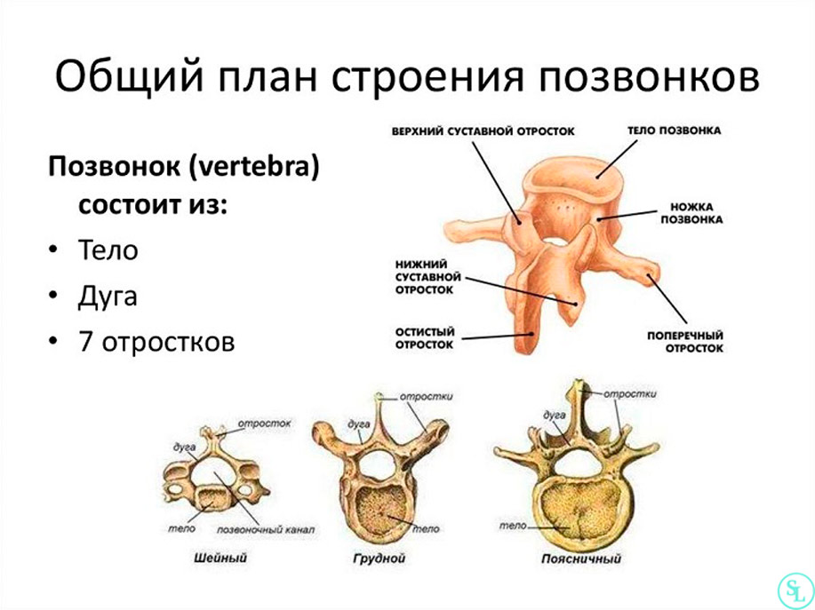
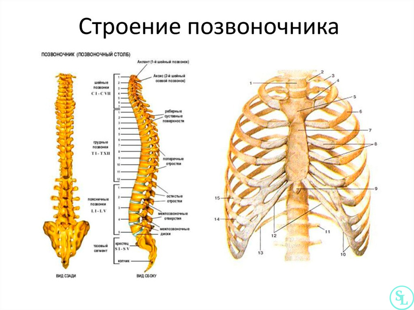
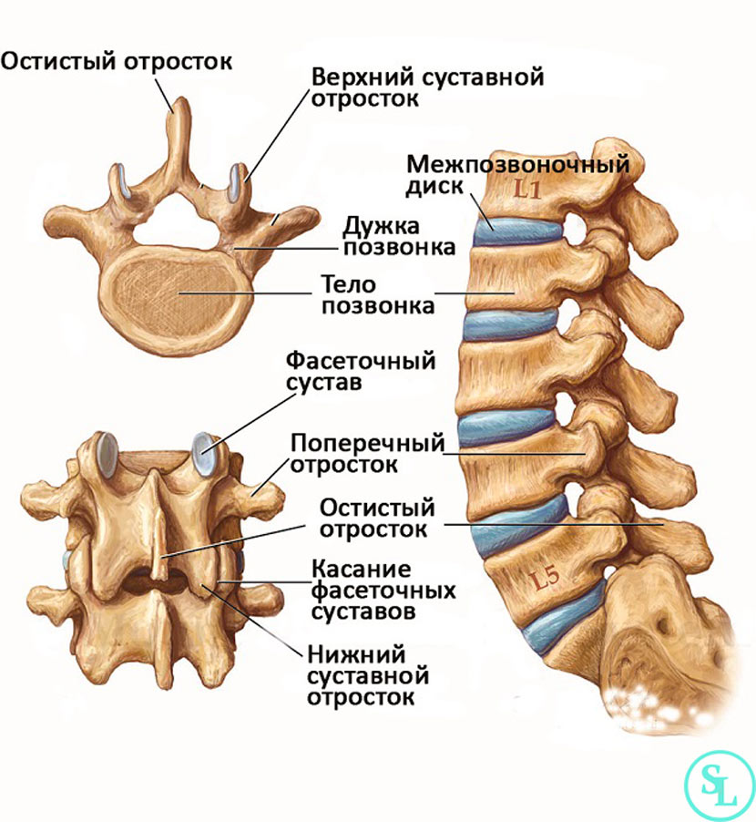

Что такое позвоночник?
Позвоночник — это основа осевого скелета человека, обеспечивающая опору, гибкость и защиту спинного мозга. Он представляет собой цепь из 33–34 позвонков, разделённых межпозвоночными дисками, которые выполняют амортизирующую функцию. Благодаря своей структуре позвоночник может выдерживать значительные нагрузки, при этом оставаясь подвижным и гибким. Он участвует в поддержании равновесия тела, обеспечивая возможность движения головы и туловища.
Позвоночник делится на пять отделов: шейный, грудной, поясничный, крестцовый и копчиковый. Каждый из них имеет свои анатомические и функциональные особенности. Шейный отдел включает 7 позвонков и отличается наибольшей подвижностью, что позволяет свободно двигать головой. Грудной отдел состоит из 12 позвонков, к которым крепятся рёбра, образуя грудную клетку. Поясничный отдел включает 5 массивных позвонков, несущих основную нагрузку от тела. Крестцовый отдел представлен 5 сросшимися позвонками, образующими крестец. Копчик состоит из 3–5 рудиментарных позвонков.
Структура позвонка включает тело, дугу и отростки. Тело позвонка несёт на себе основную нагрузку. Дуга ограничивает позвоночное отверстие, через которое проходит спинной мозг. Остистые и поперечные отростки служат точками прикрепления мышц и связок. Между позвонками расположены межпозвоночные диски, состоящие из пульпозного ядра и фиброзного кольца. Эти диски обеспечивают подвижность и амортизацию при ходьбе, прыжках и наклонах.
Важной функцией позвоночника является защита спинного мозга — главного проводника сигналов между головным мозгом и остальными частями тела. Через позвоночный канал проходят не только спинной мозг, но и спинномозговые нервы, выходящие через межпозвоночные отверстия. Повреждение позвоночника, особенно в области шеи или поясницы, может привести к тяжелым последствиям — от боли до паралича.
Позвоночник поддерживается системой мышц и связок. Глубокие мышцы спины отвечают за стабилизацию и мелкие движения, тогда как поверхностные участвуют в наклонах и поворотах туловища. Связки, такие как передняя и задняя продольные, предотвращают чрезмерные сгибания и разгибания. При слабости мышечного корсета и отсутствии физической активности осанка может ухудшаться, что ведёт к деформациям позвоночника и болевым синдромам.
Осанка — важный показатель здоровья позвоночника. Искривления, такие как сколиоз, кифоз или лордоз, возникают при нарушении баланса между мышцами и связками, а также под влиянием генетических или внешних факторов. Сколиоз — боковое искривление позвоночника — особенно часто развивается в подростковом возрасте. Правильная осанка формируется с раннего детства при условии достаточной физической активности, сбалансированной нагрузки и удобной мебели.
С возрастом межпозвоночные диски теряют эластичность и влагу, что может привести к их дегенерации. Возникают такие состояния, как остеохондроз, протрузии и грыжи. Они сопровождаются болевым синдромом, ограничением подвижности и иногда — компрессией нервных корешков. В поясничной области такие нарушения могут вызывать ишиас — иррадиацию боли в ногу. Для предотвращения подобных проблем важны упражнения, укрепляющие мышцы спины и пресса.
Помимо дегенеративных заболеваний, позвоночник подвержен травмам. Ушибы, переломы или смещения позвонков могут быть следствием падений, ДТП или спортивных травм. Особенно опасны повреждения шейного отдела, так как они могут нарушить дыхание и кровообращение. В случае травм позвоночника требуется немедленная медицинская помощь и, как правило, длительная реабилитация.
Современная медицина использует разнообразные методы диагностики заболеваний позвоночника: рентген, МРТ, КТ. Они позволяют выявить даже минимальные изменения структуры позвонков и межпозвоночных дисков. Лечение может включать медикаментозную терапию, физиотерапию, лечебную гимнастику и в тяжёлых случаях — хирургическое вмешательство.
Поддержание здоровья позвоночника возможно при соблюдении ряда правил: правильная осанка при сидении и хождении, регулярная физическая активность, контроль веса, использование ортопедической мебели, отказ от вредных привычек. Важно также соблюдать технику безопасности при подъёме тяжестей и работе в наклон.
В заключение, позвоночник — это не только опора тела, но и сложнейшая биомеханическая система, обеспечивающая движение, защиту нервной системы и участие в функциях организма. Его здоровье — основа общего самочувствия человека. Именно поэтому знания о его строении и функциях так важны в образовательной среде.